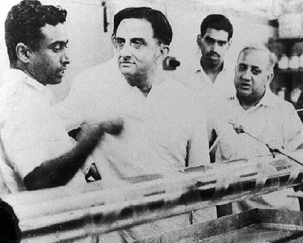

Achievement

HE WAS PART OF THE TEAM WHICH SET UP TERLS
Though Project Nandi was put in cold storage, due to it Kalam got a call from the Indian Committee for Space Research (INCOSPAR) to attend an interview at the Tata Institute of Fundamental Research (TIFR).
Learn More
HE SERVED AS THE FIRST PRINCIPAL SCIENTIFIC ADVISOR TO THE GOVERNMENT OF INDIA
After his retirement from DRDO, Kalam was appointed as the first-ever Principal Scientific Advisor (PSA) to the Government Of India from November 1999 to November 2001.
Learn More